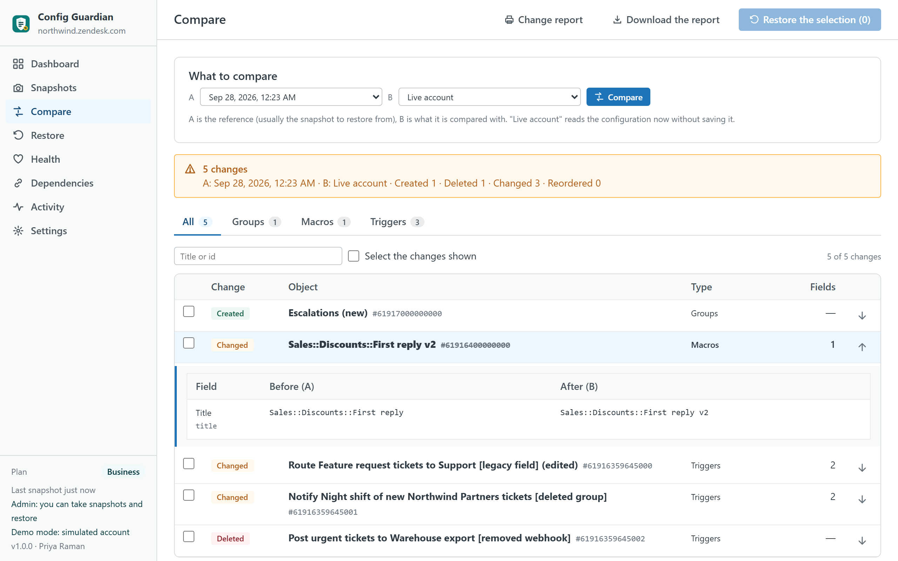
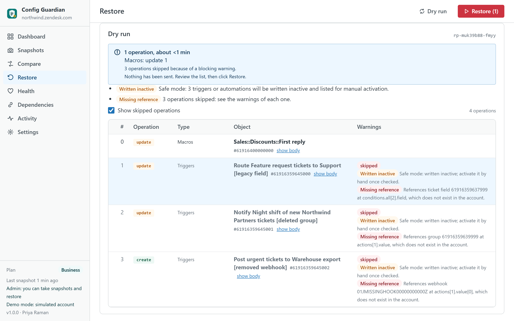
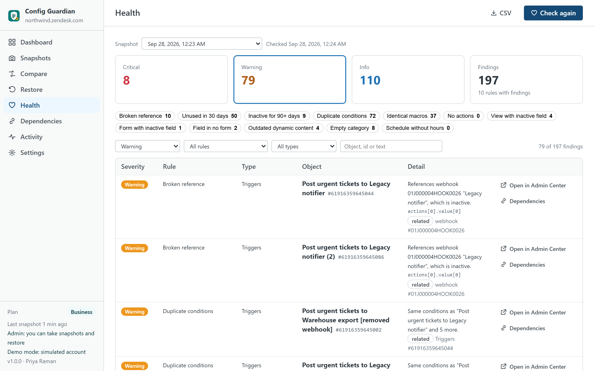

Config Guardian
Keep a dated copy of your Zendesk Support configuration inside your own account, see exactly what changed, and put it back when a trigger, a macro, a view or a field breaks. Simulation before every write, an automatic copy right before it, and undo after it.
Built for admins on Team, Growth and Professional plans, who have no version history for their rules and whose home-made backup scripts stop working when Zendesk retires API access by key on 30 April 2027. An independent app from a third-party developer, not affiliated with Zendesk.

What it does
- Takes a snapshot in one click. Triggers and their categories, automations, macros, views, ticket, user and organization fields, ticket forms, groups, custom statuses, dynamic content with every variant, SLA policies and schedules with holidays, read with your own admin session. Brands, webhooks, targets and support addresses are read too, so every reference can be checked. A hash of the whole copy is printed on every export.
- Shows what changed. A snapshot against the live account, or any two snapshots (Pro): created, deleted, changed and reordered objects, and for each change every value before and after, in the words Zendesk uses. A deleted rule that was created again with the same title is shown as a pair.
- Restores safely. Pick one rule, a selection or everything. The app simulates first and shows the exact operations and warnings; nothing is sent. It takes an automatic copy right before writing, re-creates what was deleted and rewires the rules that depended on it, writes triggers and automations inactive unless you choose otherwise, never deletes a field (fields are deactivated, because deleting one destroys ticket data), and offers undo.
- Finds what is broken or useless. References to deleted or inactive fields, groups, forms, statuses, schedules, webhooks and dynamic content; rules without use in 30 days when your Zendesk plan exposes usage; duplicated conditions; macros with identical actions; triggers without actions; views and forms that still show inactive fields; fields in no form; dynamic content with outdated variants.
- Maps dependencies. What an object references and what references it, before you touch it.
- Keeps copies where you want them. In your browser, as JSON or ZIP files with a hash manifest, and on paid plans inside your Zendesk as records of a custom object, so any admin of the account can restore from them.

What it does not do
- It does not run on a schedule. Copies are taken when an admin opens the app. The dashboard shows how old the last copy is and recommends a cadence; there is no server that could run at night.
- It does not cover everything. Skills and routing attributes, custom roles (see Security Audit & Evidence), installed apps, channels, Guide themes and articles (see Help Center Doctor), Explore, action flows, AI settings and macro attachments are out of scope and listed as such in the app.
- It does not replace the Zendesk audit log. Comparing two copies tells what changed, not who changed it.
- It never sends data anywhere. No server of ours is involved; nothing leaves your Zendesk account and your browser.

Plans
| Free | Pro · $69 | Business · $149 | |
|---|---|---|---|
| Snapshot of the whole configuration | ✓ | ✓ | ✓ |
| JSON download | ✓ | ✓ | ✓ |
| Compare with the live account | ✓ | ✓ | ✓ |
| Compare any two snapshots | — | ✓ | ✓ |
| Structural health checks | ✓ | ✓ | ✓ |
| Usage-based health (unused rules) | — | ✓ | ✓ |
| Restore with simulation, automatic pre-restore copy and undo | — | ✓ | ✓ |
| Dependency map | — | ✓ | ✓ |
| Snapshots stored inside your account | — | Last 30 | Unlimited |
| Snapshots kept in the browser | 2 | 30 | Unlimited |
| ZIP export with hash manifest | — | ✓ | ✓ |
| Restore from another account (sandbox to production) | — | — | ✓ |
| Restore log kept as evidence in your account | — | — | ✓ |
| Printable change report | — | — | ✓ |
| Priority support (one business day) | — | — | ✓ |
| Free trial | 14 days | 14 days |
Prices are per month per Zendesk account, not per agent, billed through the Zendesk Marketplace and cancellable from Admin Center at any time.
Compared with the alternatives
| Config Guardian | Zendesk Enterprise (sandbox, deployments, audit log) | Configuration platforms (Salto, Keepit) | Your own scripts | |
|---|---|---|---|---|
| Pricing | Per account, from $0; Pro $69 | Enterprise plan for every agent | Per company, hundreds to thousands per month | Engineering time, and API access by key ends on 30 April 2027 |
| Where copies live | Your Zendesk (custom object), your browser, your files | Zendesk | The platform's servers | Wherever you run them |
| Restore | One rule, a selection or everything; simulation, pre-restore copy, dependency rewiring, undo | Deployments between environments | Yes, through the platform | Write it |
| Health and dependencies | Broken references, unused rules, duplicates, dependency map | — | Partly | Write it |
| Plans | Team, Growth, Professional, Enterprise | Enterprise only | Any | Any |
Competitor details are from public documentation in September 2026 and may change; check their pages before deciding.
Privacy
The app has no server. It reads the configuration objects listed above with the signed-in admin's permissions, only when the admin takes a snapshot or opens Health. It writes only what the admin confirms after a simulation, and, when account storage is enabled, snapshot records into a custom object of your own Zendesk. It never reads or stores API keys, credentials, webhook signing keys, ticket content or end-user data, and it never transmits anything outside your Zendesk account. Uninstalling removes the app; the custom object and its records stay in your account until you delete them from Settings or from Admin Center.
Install
- Open the listing on the Zendesk Marketplace (link added once the listing is approved), click Install and choose a plan. You need to be a Zendesk admin.
- Restrict the app to admins (it reads and writes account configuration), then click Install.
- In Zendesk Support, open Config Guardian from the left navigation bar and click Take a snapshot.
Frequently asked questions
Why does it need an admin? Triggers, automations, SLA policies, schedules and dynamic content answer to admins only, and restoring writes account configuration. An agent who opens the app sees a screen that explains this.
What happens on Team or Growth plans? SLA policies and schedules answer 403 on plans that do not include them; the app marks those types "not available on your plan" and everything else works. Usage counts for rules and macros come from Zendesk on Professional and above; below that, "unused" is not computed and the app says so. Suite Team accounts have three custom objects: if all are in use, account storage is not offered and copies stay in the browser and in files.
Can a restore fire triggers by surprise? Updating a trigger does not run it, and the app writes triggers and automations inactive by default; you activate them from the list the app shows after the run, or you switch off safe mode when you know what you are restoring.
What if a rule references a group or a field that no longer exists? The simulation says so before anything is sent. If the missing object is part of the same restore, it is created first and the rule is rewired to the new id; if it is not, that operation is skipped with the reason.
Can I move a configuration from a sandbox to production? On Business: take a snapshot on the sandbox, download it, upload it on production and restore; objects are matched by title, and the simulation lists what could not be matched.
How big is a copy? A thousand triggers and two thousand macros make about 1.5 MB of JSON, stored compressed in a dozen records of the custom object; taking it needs about a hundred API requests, well under Zendesk's limits.
Also from the same developer: Security Audit & Evidence checks the security configuration; Data Custodian searches, exports, redacts and deletes tickets with evidence; Help Center Doctor keeps the help center healthy.
Support: support@helpcenterdoctor.app, answered within one business day.